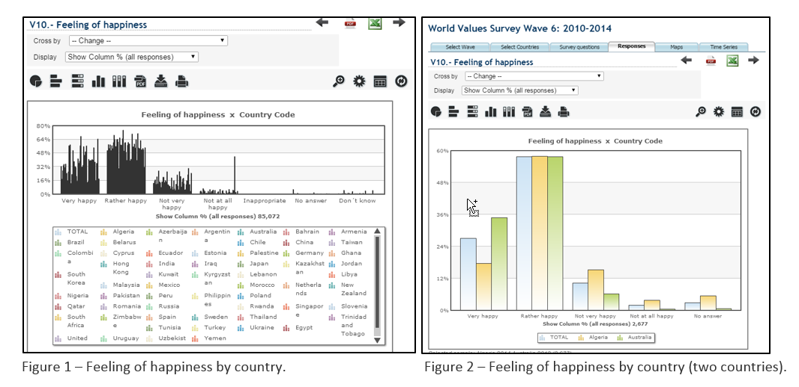
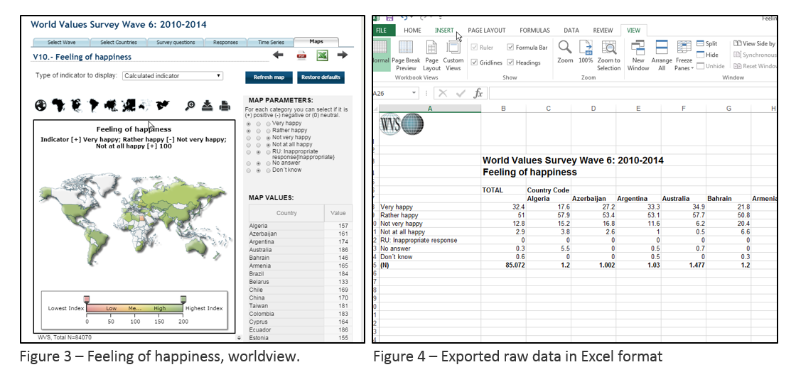
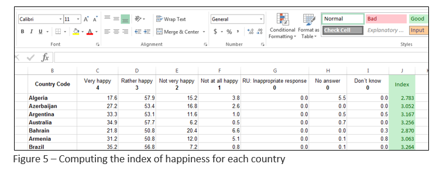

Analitical trail 1
As a starting point in this research I have chosen a common belief that the wealthier the people are the happier they feel, which in many cases seems to be very controversial. I considered focusing on the index of happiness of people across countries as the main parameter and taking into account other factors that might influence it as well. So the ultimate goal that I set for myself was visualizing happiness across countries and factors that might be influencing it. As a result, I aim for spreading light over some interesting hypothesis based on the given visualization.
For obtaining the raw data I have used the WVS online database service that provides results of worldwide polls both as a downloadable file and through their web tools. By exploring the available data related to my initial concern, I have tried to determine what factors might influence happiness and which of them are available as indexes in the database. This might be very subjective, but I have considered the following two parameters that in my opinion could influence the happiness of people the most – income and religion.
I have tried to make use of the available online visualization tools provided by WVS in order to see if that could help me. In order to make a selection, some additional constraints were required, such as the wave. I have focused on the last one (2010-2014). After selecting the required fields I was able to see some results. For instance, after selecting the parameter for “feeling of happiness” cross country code I was provided with the following visualization (Figure 1). Although the graph was definitely visualizing the responses results, I faced a number of challenges in understanding it. It appeared confusing the color coding in the legend, since it didn’t match any visual structures on the graph itself. Another problem was the inability to actually compare the countries one to another, because the bars representing different countries were clattered together. One solution for that problem would have been making a selection just for 2 countries (Figure 2), and repeating the same procedure for every country. However that would involve a high complexity in terms of both amount of time spend and inability to be able to draw conclusions. Moreover, even for comparing two countries it was quite difficult to say in which one people are happier, provided just the bar chart (Figure 2), since the information was spread among a variety of answers (very, rather, not very etc.). Therefore was needed an average index for each country, in order to be able to make a good comparison. To my surprise, I found that WVS has one more visualization option which was almost what I was willing to use – Maps (Figure 3).

This visualization appeared to be quite good, providing relevant visual mappings (color to country) and some interaction for filtering the data and displaying it in a different scale (view transformations). Nevertheless one thing that I still found confusing was the algorithm (data transformations) by which the given index has been computed.

My initial goal has been to compare the index of happiness by countries and cross other variables (religion, income), which unfortunately is not possible to do using the tools provided by WVS. Hence, there is an opportunity to export the raw data, which encouraged me to try to come up with a visualization on my own.
The raw data that I was able to collect consisted of multiple answers, grouped by country in an Excel sheet (Figure 4). As mentioned previously, a certain common index was needed, in order to be able to compare countries on a higher level of abstraction. Therefore I have applied a number of data transformations. First of all I have transposed the table, for easing the overview, since there are numerous columns and only several rows, and it just felt natural to have it the other way. Next, I have mapped the 7 answers on a scale from 4 (very happy) to 0 (don’t know, no answer, inappropriate response), and computed the index for every country (Figure 5) as being the sum of all (scaleValue × percentValue/100).
